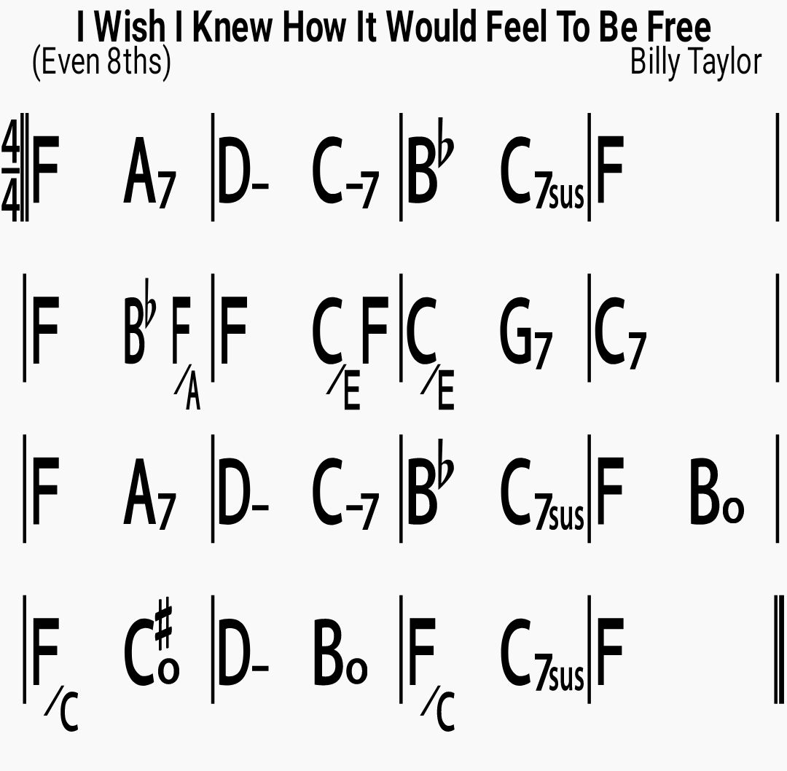

I Wish I Knew How It Would Feel To Be Free
Gospel tune and civil rights anthem made famous by Nina Simone
Composed by Billy Taylor
Year 1963
Length 16 bars
Time
4/4
Style
Even 8ths
Common Key
F
Chords

Lyrics
I wish I knew how It would feel to be free I wish I could break All the chains holding me I wish I could say All the things that I should say Say 'em loud, say 'em clear For the whole round world to hear I wish I could share All the love that's in my heart Remove all the bars That keep us apart I wish you could know What it means to be me Then you'd see and agree That every man should be free